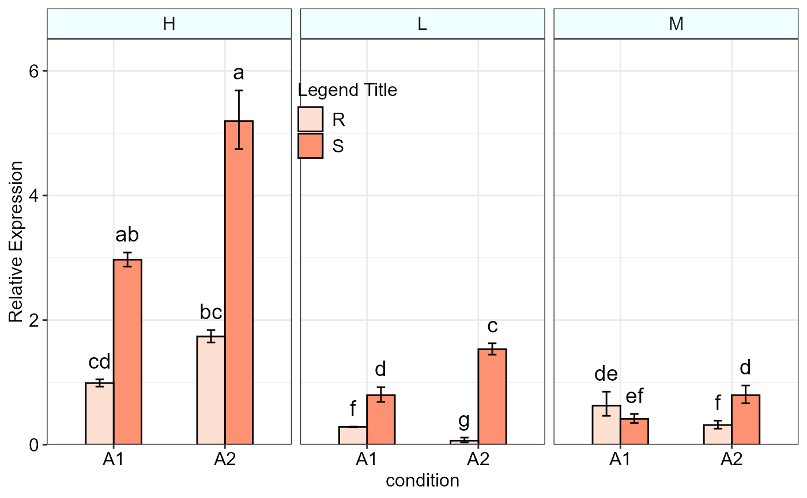
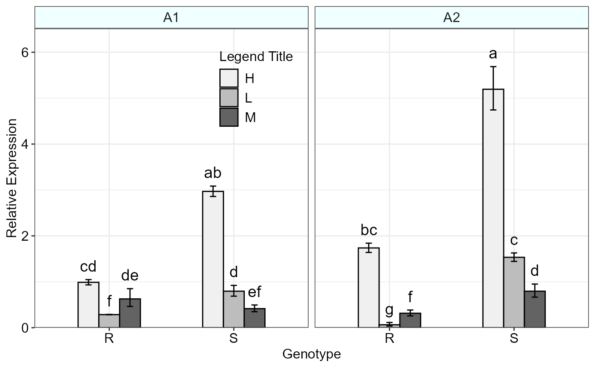
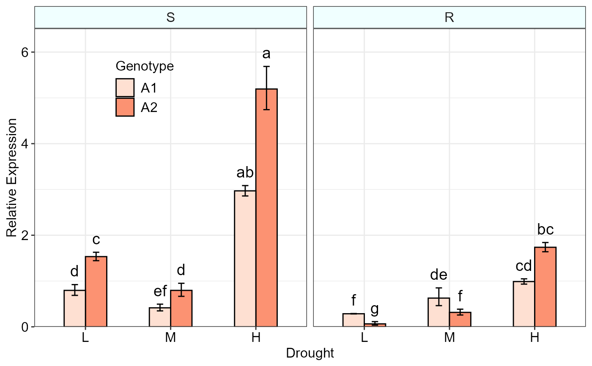
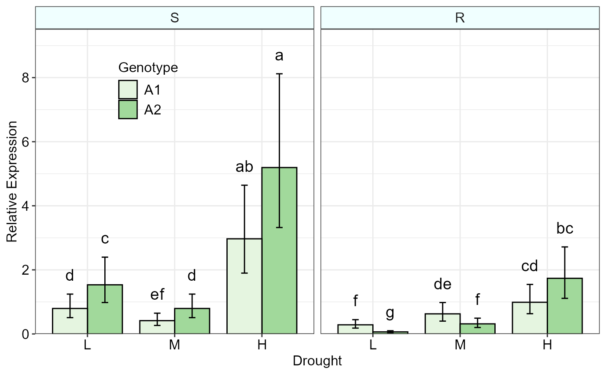

qpcrANOVARE output of a a three-factorial experiment dataR/threeFACTORplot.r
threeFACTORplot.RdBar plot of the relative expression (\(\Delta C_T\) method) of a gene along with the confidence interval and significance
threeFACTORplot(
res,
arrangement = c(1, 2, 3),
bar.width = 0.5,
fill = "Reds",
xlab = "none",
ylab = "Relative Expression",
errorbar,
y.axis.adjust = 0.5,
y.axis.by = 2,
letter.position.adjust = 0.3,
legend.title = "Legend Title",
legend.position = c(0.4, 0.8),
fontsize = 12,
fontsizePvalue = 5,
show.letters = TRUE,
axis.text.x.angle = 0,
axis.text.x.hjust = 0.5
)the FC data frame created by qpcrANOVARE(x)$Result function on a three factorial data such as data_3factor example data frame.
order based on the columns in the output table (e.g. c(2,3,1) or c(1,3,2)) affecting factor arrangement of the output graph.
a positive number determining bar width.
a color vector specifying the fill color for the columns of the bar plot. One of the palettes in display.brewer.all (e.g. "Reds" or "Blues", ...) can be applied.
the title of the x axis
the title of the y axis
Type of error bar, can be se or ci.
a negative or positive number for reducing or increasing the length of the y axis.
determines y axis step length
adjust the distance between the grouping letters to the error bars
legend title
a two digit vector specifying the legend position.
all fonts size of the plot
font size of the pvalue labels
a logical variable. If TRUE, mean grouping letters are added to the bars.
angle of x axis text
horizontal justification of x axis text
Bar plot of the average fold change for target genes along with the standard error or 95% confidence interval as error bars.
The threeFACTORplot function generates the bar plot of the average fold change for target genes along with the significance, standard error (se) and the 95% confidence interval (ci).
#' # See a sample data frame
data_3factor
#> Type Conc SA Replicate EPO POCt EGAPDH GAPDHCt
#> 1 R L A1 1 2 33.30 2 31.53
#> 2 R L A1 2 2 33.39 2 31.57
#> 3 R L A1 3 2 33.34 2 31.50
#> 4 R L A2 1 2 34.01 2 31.48
#> 5 R L A2 2 2 36.82 2 31.44
#> 6 R L A2 3 2 35.44 2 31.46
#> 7 R M A1 1 2 32.73 2 31.30
#> 8 R M A1 2 2 32.46 2 32.55
#> 9 R M A1 3 2 32.60 2 31.92
#> 10 R M A2 1 2 33.37 2 31.19
#> 11 R M A2 2 2 33.12 2 31.94
#> 12 R M A2 3 2 33.21 2 31.57
#> 13 R H A1 1 2 33.48 2 33.30
#> 14 R H A1 2 2 33.27 2 33.37
#> 15 R H A1 3 2 33.32 2 33.35
#> 16 R H A2 1 2 32.53 2 33.47
#> 17 R H A2 2 2 32.61 2 33.26
#> 18 R H A2 3 2 32.56 2 33.36
#> 19 S L A1 1 2 26.85 2 26.94
#> 20 S L A1 2 2 28.17 2 27.69
#> 21 S L A1 3 2 27.99 2 27.39
#> 22 S L A2 1 2 28.71 2 29.45
#> 23 S L A2 2 2 29.01 2 29.46
#> 24 S L A2 3 2 28.82 2 29.48
#> 25 S M A1 1 2 30.41 2 28.70
#> 26 S M A1 2 2 29.49 2 28.66
#> 27 S M A1 3 2 29.98 2 28.71
#> 28 S M A2 1 2 28.91 2 28.09
#> 29 S M A2 2 2 28.60 2 28.65
#> 30 S M A2 3 2 28.59 2 28.37
#> 31 S H A1 1 2 29.03 2 30.61
#> 32 S H A1 2 2 28.73 2 30.20
#> 33 S H A1 3 2 28.83 2 30.49
#> 34 S H A2 1 2 28.29 2 30.84
#> 35 S H A2 2 2 28.53 2 30.65
#> 36 S H A2 3 2 28.28 2 30.74
# Before plotting, the result needs to be extracted as below:
res <- qpcrANOVARE(data_3factor, numberOfrefGenes = 1, block = NULL)$Result
#> Analysis of Variance Table
#>
#> Response: wDCt
#> Df Sum Sq Mean Sq F value Pr(>F)
#> T 11 94.001 8.5456 29.188 3.248e-11 ***
#> Residuals 24 7.027 0.2928
#> ---
#> Signif. codes: 0 '***' 0.001 '**' 0.01 '*' 0.05 '.' 0.1 ' ' 1
#>
#> Relative expression table
#> Type Conc SA RE LCL UCL se Lower.se Upper.se letters
#> 1 S H A2 5.1934 3.3217 8.1197 0.1309 4.7429 5.6867 a
#> 2 S H A1 2.9690 1.8990 4.6420 0.0551 2.8577 3.0846 ab
#> 3 R H A2 1.7371 1.1110 2.7159 0.0837 1.6392 1.8409 bc
#> 4 S L A2 1.5333 0.9807 2.3973 0.0865 1.4441 1.6280 c
#> 5 R H A1 0.9885 0.6323 1.5455 0.0841 0.9325 1.0478 cd
#> 6 S L A1 0.7955 0.5088 1.2438 0.2128 0.6864 0.9219 d
#> 7 S M A2 0.7955 0.5088 1.2438 0.2571 0.6656 0.9507 d
#> 8 R M A1 0.6271 0.4011 0.9804 0.4388 0.4626 0.8500 de
#> 9 S M A1 0.4147 0.2652 0.6483 0.2540 0.3478 0.4945 ef
#> 10 R M A2 0.3150 0.2015 0.4925 0.2890 0.2578 0.3849 f
#> 11 R L A1 0.2852 0.1824 0.4459 0.0208 0.2811 0.2893 f
#> 12 R L A2 0.0641 0.0410 0.1002 0.8228 0.0362 0.1134 g
res
#> Type Conc SA RE LCL UCL se Lower.se Upper.se letters
#> 1 S H A2 5.1934 3.3217 8.1197 0.1309 4.7429 5.6867 a
#> 2 S H A1 2.9690 1.8990 4.6420 0.0551 2.8577 3.0846 ab
#> 3 R H A2 1.7371 1.1110 2.7159 0.0837 1.6392 1.8409 bc
#> 4 S L A2 1.5333 0.9807 2.3973 0.0865 1.4441 1.6280 c
#> 5 R H A1 0.9885 0.6323 1.5455 0.0841 0.9325 1.0478 cd
#> 6 S L A1 0.7955 0.5088 1.2438 0.2128 0.6864 0.9219 d
#> 7 S M A2 0.7955 0.5088 1.2438 0.2571 0.6656 0.9507 d
#> 8 R M A1 0.6271 0.4011 0.9804 0.4388 0.4626 0.8500 de
#> 9 S M A1 0.4147 0.2652 0.6483 0.2540 0.3478 0.4945 ef
#> 10 R M A2 0.3150 0.2015 0.4925 0.2890 0.2578 0.3849 f
#> 11 R L A1 0.2852 0.1824 0.4459 0.0208 0.2811 0.2893 f
#> 12 R L A2 0.0641 0.0410 0.1002 0.8228 0.0362 0.1134 g
# Arrange the first three colunms of the result table.
# This determines the columns order and shapes the plot output.
threeFACTORplot(res, arrangement = c(3, 1, 2), errorbar = "se",
xlab = "condition")

threeFACTORplot(res, arrangement = c(1, 2, 3), bar.width = 0.5, fill = "Greys",
xlab = "Genotype", ylab = "Relative Expression", errorbar = "se")

# Reordering factor levels to a desired order.
res$Conc <- factor(res$Conc, levels = c("L","M","H"))
res$Type <- factor(res$Type, levels = c("S","R"))
# Producing the plot
threeFACTORplot(res, arrangement = c(2, 3, 1), bar.width = 0.5,
fill = "Reds", xlab = "Drought", ylab = "Relative Expression",
errorbar = "se", legend.title = "Genotype", legend.position = c(0.2, 0.8))

# When using ci as error, increase the
# y.axis.adjust value to see the plot correctly!
threeFACTORplot(res, arrangement = c(2, 3, 1), bar.width = 0.8, fill = "Greens",
xlab = "Drought", ylab = "Relative Expression", errorbar = "ci",
y.axis.adjust = 1, y.axis.by = 2, letter.position.adjust = 0.6,
legend.title = "Genotype", fontsize = 12, legend.position = c(0.2, 0.8),
show.letters = TRUE)
